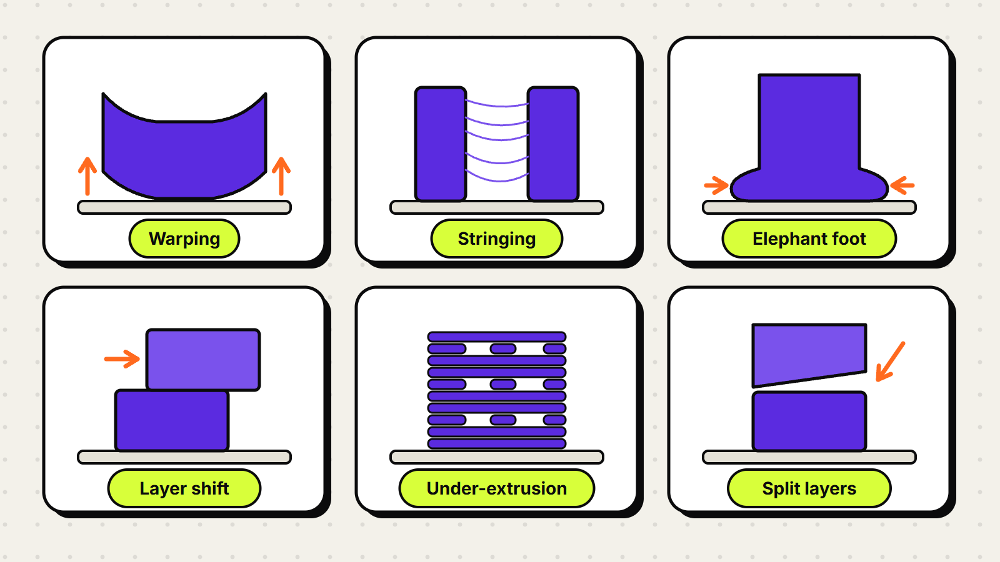
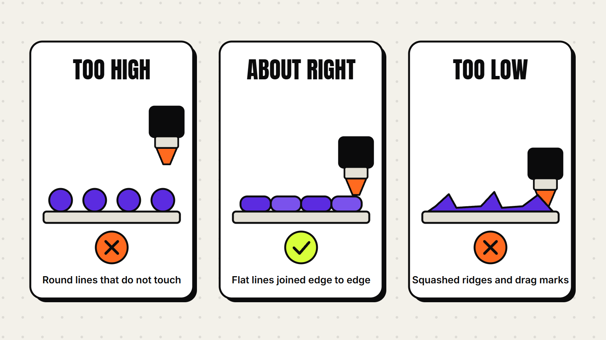

Every 3D printer produces a bad print sooner or later. The good news is that most faults leave clear clues. Once you can name the problem, the fix is usually a small change to the first layer, the temperature, the cooling, the filament, or the design. This guide covers the faults seen most often on filament (FDM) printers, what causes them, and what to try first.
Change one thing at a time and print a small test. If you change five settings together, you will not know which one worked.

What you see: The first lines drag, curl, or ball up on the nozzle. Sometimes the whole part comes loose halfway and ends as a nest of loose plastic.
Likely causes: The nozzle is too far from the bed, the surface is greasy, the bed is too cool, or the first layer is printed too fast.

What you see: Corners peel up from the bed, or a flat base becomes curved.
Likely causes: Plastic shrinks as it cools. Upper layers pull on lower ones, and the stress shows at sharp corners. ABS and ASA are especially prone to it.
What you see: The bottom one or two layers bulge outwards, so the base is wider than designed and parts do not fit together.
Likely causes: The nozzle is too close on the first layer, or the bed is hot enough to keep the lower layers soft while weight builds above.
What you see: Fine hairs between separate parts of a model, or small beads on the surface.
Likely causes: Melted plastic leaks from the nozzle while it travels. High temperature, weak retraction (the filament is not pulled back far or fast enough), or damp filament all add to it.
What you see: Missing sections, holes in top surfaces, or walls with visible gaps between lines.
Likely causes: A partly blocked nozzle, a tangled spool, a slipping feed gear, printing too fast for the temperature, or a wrong filament diameter in the settings.
What you see: The upper part of the print is offset sideways, like a stack of books nudged out of line.
Likely causes: A loose belt or pulley, the nozzle striking a curled section, speeds too high for the machine, or someone bumping the table.
What you see: Cracks run along layer lines, or the part snaps cleanly between two layers.
Likely causes: Each layer was not hot enough to bond with the one below. Low temperature, too much cooling, thick layers for the nozzle size, and moisture all contribute.
Many filaments absorb water from the air, and a humid season makes it worse. In a city like Bhiwandi, a spool left open during the monsoon can start to behave badly within days or weeks. Wet filament pops and hisses at the nozzle, strings more, looks rough, and breaks more easily. PETG tends to take up moisture faster than PLA. Store spools sealed with desiccant, and dry them at the temperature the filament maker recommends. Too much heat can deform the spool or the filament.
| Symptom | Check first |
|---|---|
| Part comes loose | Clean surface, first-layer height |
| Corners lift | Draughts, bed temperature, brim |
| Wide base | First layer too squashed or bed too hot |
| Fine hairs | Temperature, retraction, damp filament |
| Holes and gaps | Blockage, spool tangle, print speed |
| Sideways step | Belts, collisions, table movement |
| Cracks between layers | Temperature, cooling, orientation |
Settings cannot rescue every model. Large flat plates warp, thin spikes snap, and steep overhangs sag. A few design changes prevent much of this, and our guide to wall thickness, overhangs, and fit walks through them.
Tip: Printer firmware and slicers differ. Use your machine maker's manual for adjustment steps, and switch off and cool the printer before touching the nozzle or belts.
Would you rather skip the troubleshooting? Send us the file through the quote form, and we will tell you if something needs changing before it is printed.